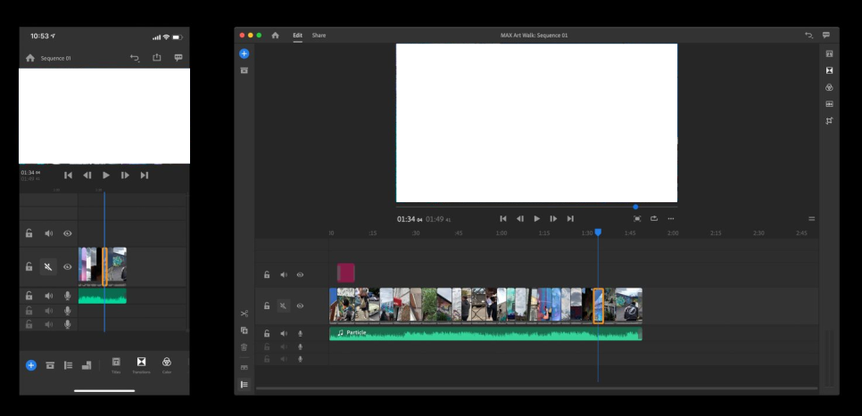

Menu
Adobe app
MENU
Close Menu
Photoshop
Lightroom
Lightroom Classic
Fresco
Illustrator
Dimension
XD
Dreamweaver
InDesign
Premiere Pro
Premiere Rush
After Effects
Animate
Audition
Character Animator
Prelude
Media Encoder
Adobe app 설명서
Premiere Rush
사용
프리미어 프로와 다르게 모바일 환경에 맞춰서 제작된 영상편집프로그램 (컴퓨터도 이용 가능)
프리미어 프로 보다는 기능은 적지만 모바일로 촬영한 영상을 모바일에서 편집하고 sns등에 바로 게시가능한 서비스
기능
영상 편집, 효과, 텍스트 추가
핸드폰으로 바로 촬영 후 언제 어디서든 편집 가능
다른 어도비 앱들과 상호작용 등
*사용화면

프리미어 러쉬를 이용한 예시
출처:
www.behance.net
,
www.behance.net
관련 유튜버(강좌)
조블리
관련 직업 및 사용처
유튜브 영상 편집자
모바일로 영상을 찍고 블로그,sns 등에 편집하여 올릴 때
시스템 최소 요구사양(권장사양)
윈도우
시스템
최소요구사항
프로세서(CPU)
64비트를 지원하는 멀티코어 프로세서(권장: Intel Core i5 또는 i7, 또는 이와 상응)
운영 체제
64비트를 지원하는 Microsoft Windows 10(버전 1709 이상)
램
8GB RAM
디바이스 드라이버
Windows®용 Intel® Graphics Driver(버전 25.20.100.6326)
하드 디스크 공간
설치를 위한 8GB의 하드 디스크 여유 공간, 설치 중 추가 공간 필요(이동식 플래시 저장 디바이스에 설치할 수 없음)
모니터 해상도
1280 x 800 디스플레이(1920 x 1080 이상 권장)
GPU(그래픽)
Windows Premiere Rush는 Premiere Pro와 동일한 GPU를 지원합니다
인터넷
소프트웨어를 활성화하거나 구독을 확인하고 온라인 서비스를 이용하려면 인터넷 연결 및 등록이 필요합니다
맥os
시스템
최소요구사항
프로세서(CPU)
64비트를 지원하는 멀티코어 Intel 프로세서(권장: Intel Core i5 또는 i7, 또는 이와 상응)
운영 체제
macOS X v10.13 이상
램
8GB RAM
사운드 카드
Apple Core Audio 호환 사운드 카드
하드 디스크 공간
설치를 위한 8GB의 하드 디스크 여유 공간, 설치 중 추가 공간 필요(대/소문자를 구분하는 파일 시스템이 사용되는 볼륨 또는 이동식 플래시 저장 디바이스에 설치할 수 없음)
모니터 해상도
1280 x 800 디스플레이(1920 x 1080 이상 권장)
GPU(그래픽)
MacOS Premiere Rush는 Premiere Pro와 동일한 GPU를 지원합니다. 자세한 내용은 권장 그래픽 카드 를 참조 하십시오
인터넷
소프트웨어를 활성화하거나 구독을 확인하고 온라인 서비스를 이용하려면 인터넷 연결 및 등록이 필요합니다
* 더 자세한 정보
한국어
/
영어
출처-
www.adobe.com